Slope and aspect for the bench above Kuragh and Charun, using the method Esri published for its Native Maps SDKs (release 300.1). The bench is the ground your uplift and canal lines are drawn to serve.
Mean aspect 335°, with 84% of the bench facing N or NW. No cell falls in the ESE sector (101–124°), and none faces anywhere from E to SE. It is a steady 6–14° ramp that tilts toward the Mastuj.
Share of bench cells by direction faced, in the Esri colormap's hues. *ESE (101–124°) is a 16-point sector between E and SE.
Soranlasht does not appear in OpenStreetMap, Google Maps or Google Earth's search. It was located from your own lines in My Places: the canal path runs along the bench at about 2,040–2,200 m, and the uplift line drops from its eastern end to Charun. The outline is every connected cell at 15° or less between 2,050 and 2,320 m, smoothed to remove the 30 m grid steps.
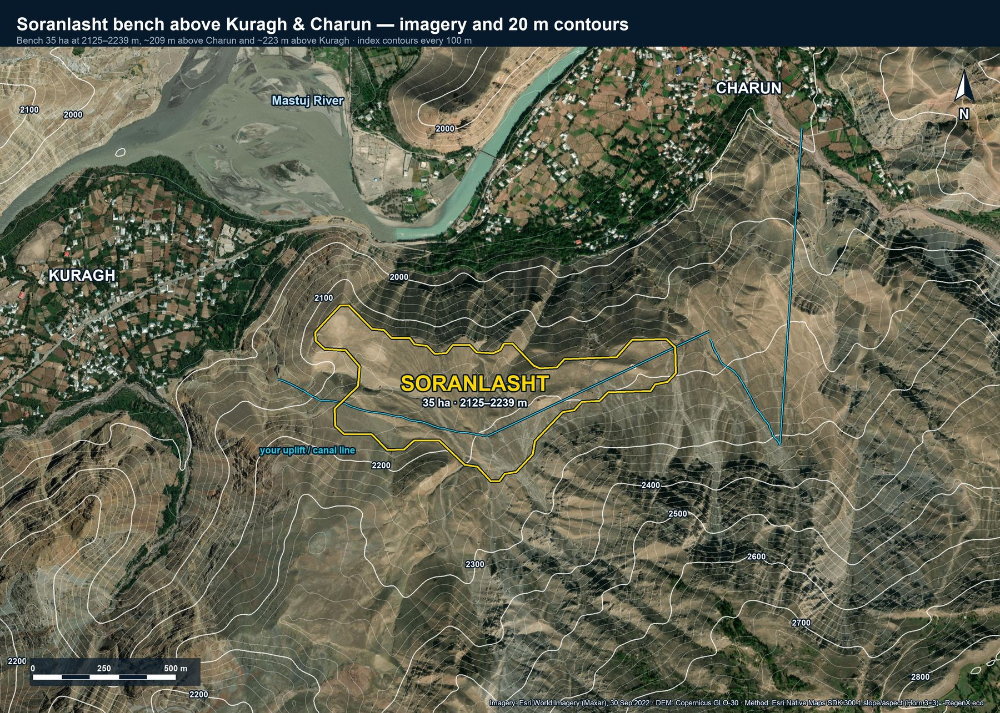
Slope is the steepest rate of elevation change at each cell, in degrees from 0 (flat) to 90 (vertical). The wall between the valley floor and the bench runs 25–45°. The bench itself is 6–14° almost everywhere, which is terrace-able but not flat: only 4% of it is under 5°.
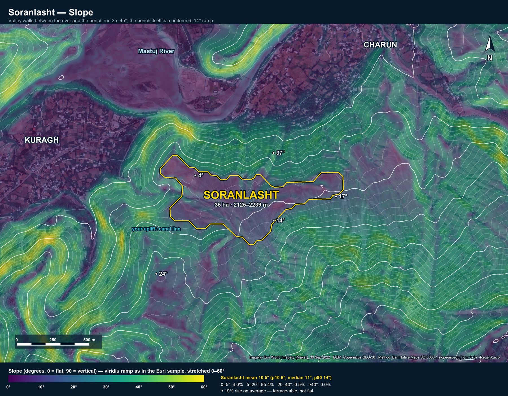
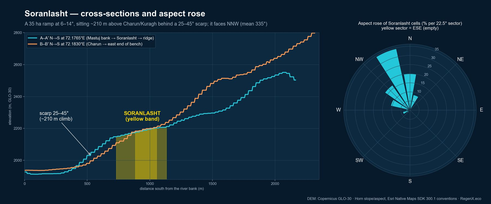
Aspect is the compass direction a slope faces, measured clockwise from north. The arrows show the downslope direction smoothed over about 150 m, with longer arrows on steeper ground. Across the bench they point N to NW. Only the western tip turns W toward Kuragh.
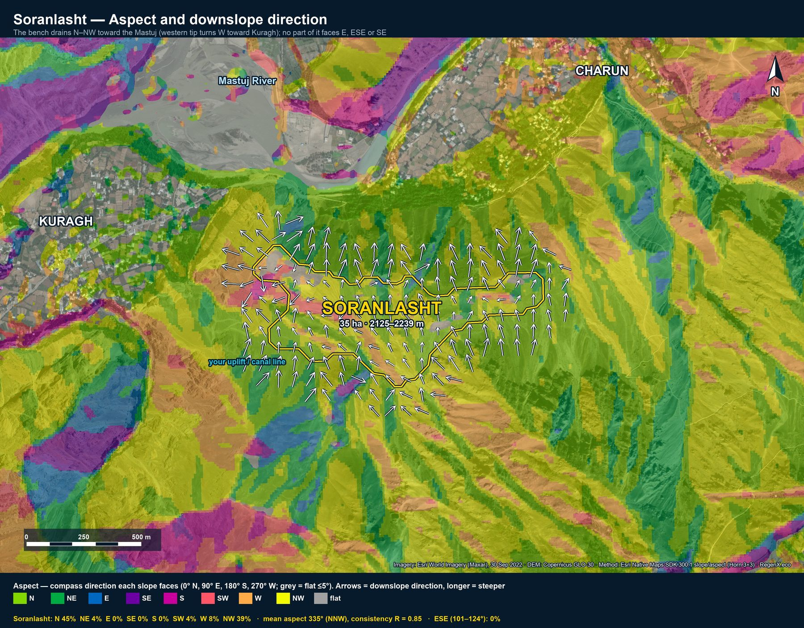
Following the Esri post, slope goes into four bands and aspect into eight directions, and each cell gets one combined class. Hue shows the direction a slope faces and intensity shows how steep it is. On Soranlasht, 44% of cells are gentle north-facing ground and 37% are gentle north-west-facing.
| N | NE | E | SE | S | SW | W | NW | |
|---|---|---|---|---|---|---|---|---|
| 0–5° | ||||||||
| 5–20° | ||||||||
| 20–40° | ||||||||
| >40° | ||||||||
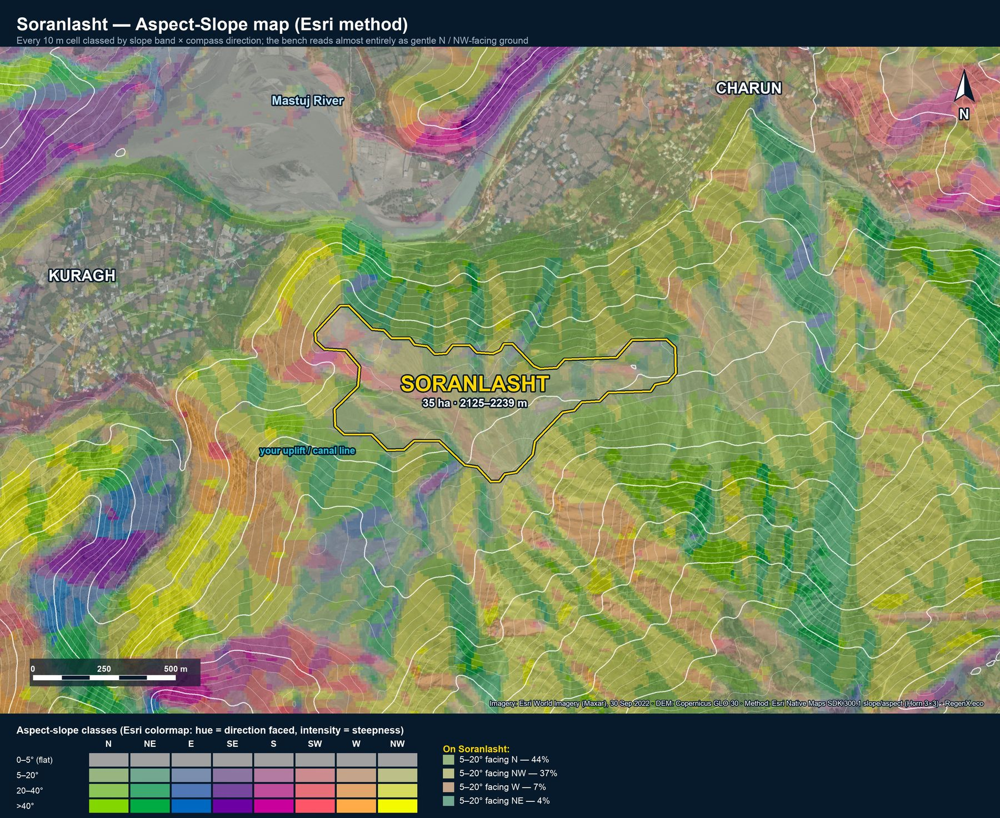
The overlays were loaded into Google Earth Pro over its latest imagery for this spot, Airbus, 26 July 2024. The oblique views look south-south-east from above the river, so the bench rises away from the camera.
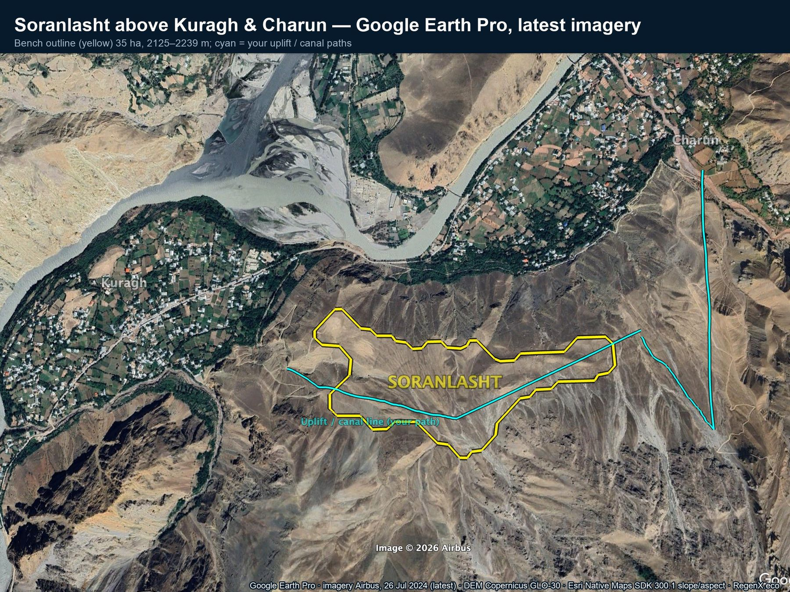
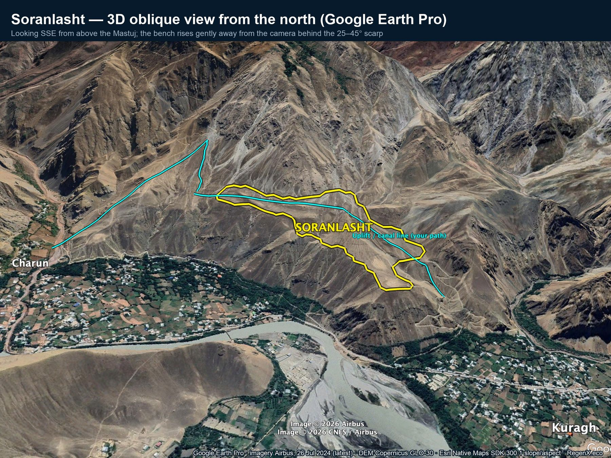
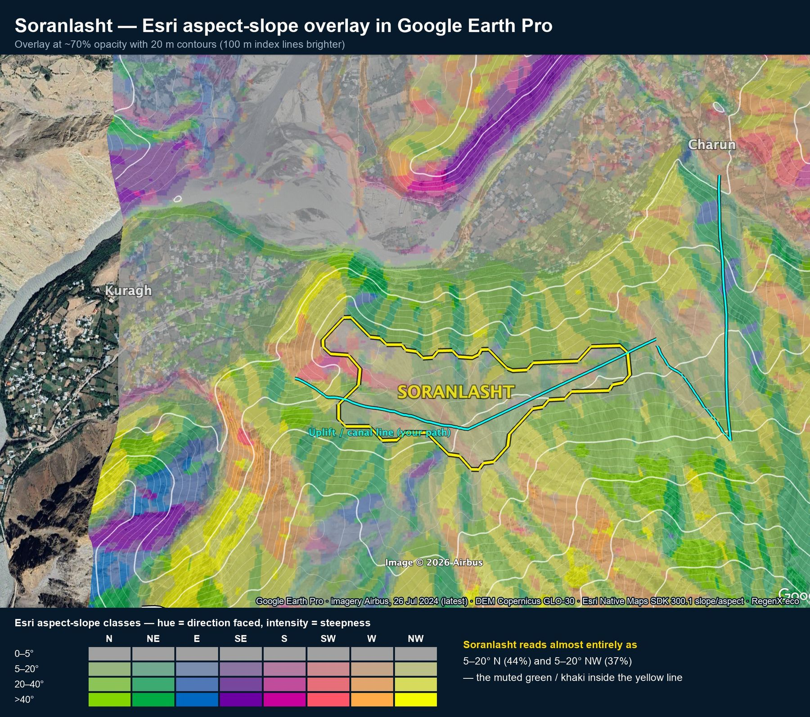
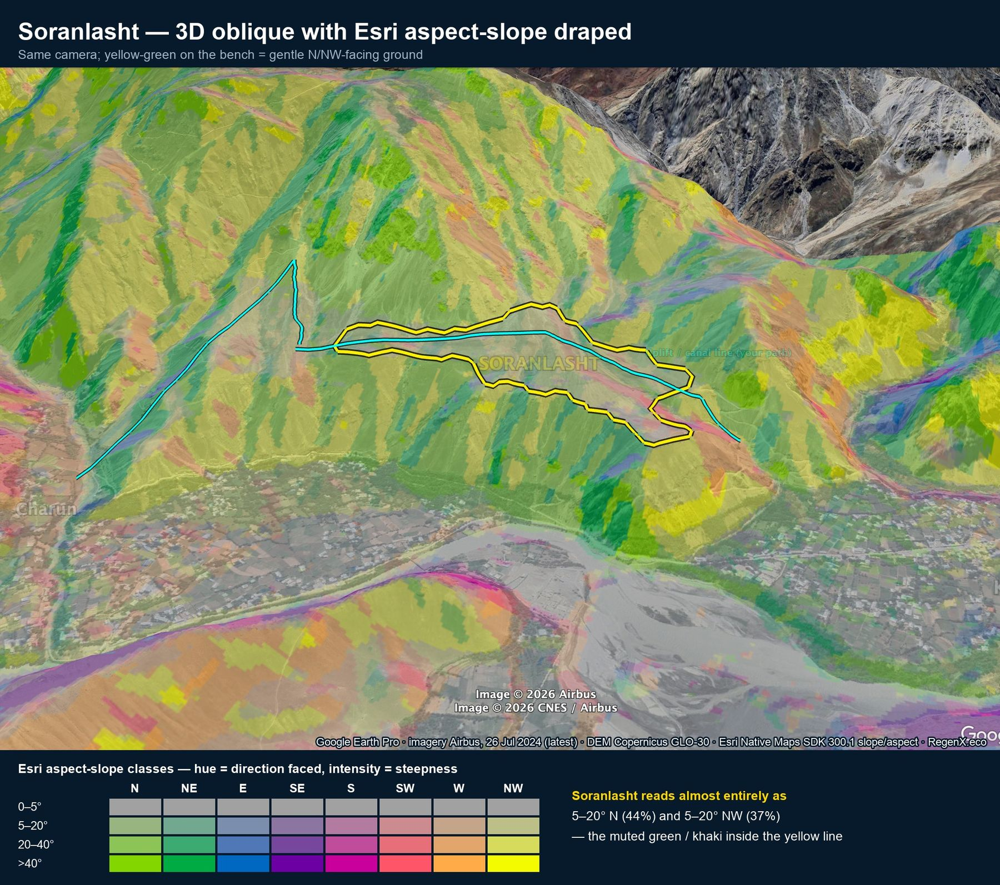
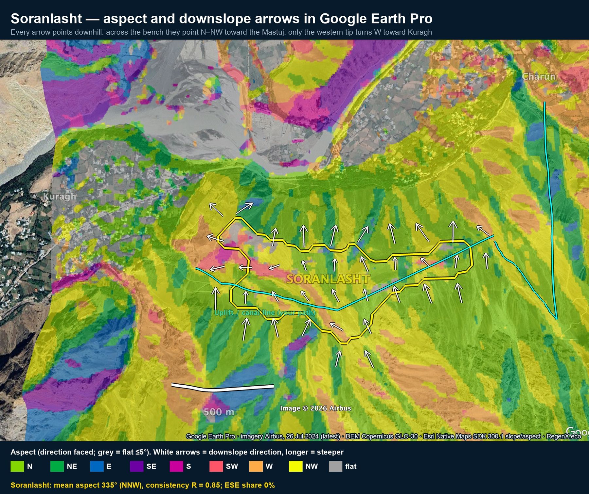
Earth holds five sharp layers here: Nov 2013, May 2017, Aug 2020, Oct 2022 and Jul 2024. Earlier layers are Landsat-grade only. At every date the bench is bare and unirrigated, with footpaths and two pale cleared patches on its north-west lobe and no fields or buildings. At this zoom you can't tell whether a channel has been built along the canal line. All the visible change is on the valley floor: the river braids and the orchards.
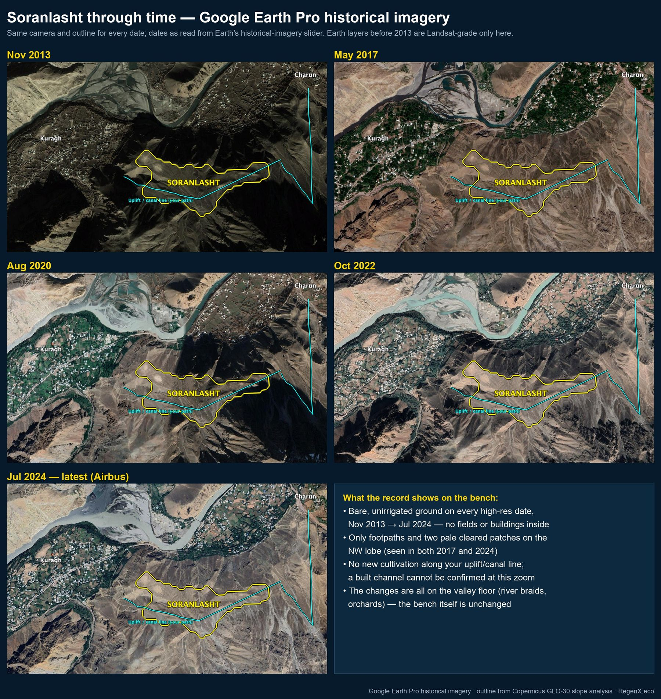
Copernicus GLO-30 (30 m), projected to UTM 43N. Slope and aspect use the Horn 3×3 kernel that ArcGIS uses. It was checked on synthetic planes facing east and north, which returned 90.0° and 0.0°.
Slope runs 0–90°. Aspect runs from 0 up to 360°, clockwise from north, with flat cells set to −1. There are eight bands, and north wraps from 337.5° to 22.5°. Aspect-slope class = slope bucket (10/20/30/40) + direction (1–8).
Statistics come from the native 30 m cells inside the outline. Mean aspect is slope-weighted and circular. R is the length of the mean direction vector: 1 means every cell faces the same way.
A 30 m model smooths small terraces and gully walls, so it understates short steep breaks. The outline is a slope threshold, not a surveyed or cadastral boundary. The 10 m display rasters are resampled only to look smooth and carry no extra detail.